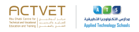

Who we are
Five students from ATS Abu Dhabi Boys, taking part in the ATRC School Program Quantum Challenge 2026–27.
Saeed Alketbi
Team member
Mansour Almenhali
Team member
Saeed Alzubaidi
Team member
Sultan Alameri
Team member
Rashed Alhantoobi
Team member
Nidal Saleh
ATS Abu Dhabi Boys, Applied Technology Schools, part of the Abu Dhabi Centre for Technical and Vocational Education and Training (ACTVET).

ATRC Quantum Challenge
The Advanced Technology Research Council (ATRC) School Program asks teams to design a new application of quantum technology that is imaginative but plausible. Module 01 was led by quantum researchers from the Technology Innovation Institute (TII).
Our answer uses quantum sensing, one of the three areas where quantum technology is strongest, to solve a real problem in the UAE.
Proposal and prototype
Our ten-section proposal follows the ATRC research-poster template. This website and its simulation lab are our prototype demonstration.